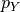
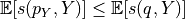
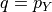
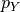
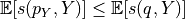
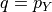

Tutorial 1.b: Learning Uncertainty Representations from Data with Gradient Descent¶
In the previous tutorial we demonstrated several types of predictions and metrics to measure their quality. Naturally, given a quality measurement we can also optimize the predictions to maximize the quality measure. This tutorials demonstrates how to access the large number of inbuilt datasets in torchuq and use torchuq metrics to train a model on these datasets.
Most of the tutorial will follow the standard deep learning pipeline. The only difference is that the torchuq metrics used as training objectives. In torchuq, most metrics are differentiable, so they can be directly used as objective functions and optimized with gradient descent. To see which metrics are differentiable see the reference list in [TBD].
Setting up the Environment¶
We first setup the environment of the tutorial. First load the necessary dependencies.
from matplotlib import pyplot as plt
import torch
from torch import optim, nn
from torch.nn import functional as F
from torch.utils.data import DataLoader
from torch.distributions.normal import Normal
import sys
sys.path.append('../..')
import torchuq
# device = torch.device('cuda:0') # Use this option if you have GPU
device = torch.device('cpu')
Dataset: We will use the UCI boston dataset. For your convenience
torchuq includes a large collection of benchmark datasets with a single
interface torchuq.dataset.regression.get_regression_datasets or
torchuq.dataset.classification.get_classification_datasets. All the
data files are included with the repo, so you should be able to use
these datasets out-of-the-box. For a list of available datasets see
link.
In addition to these simple datasets, there are also some larger
datasets that require manual download of the data files. To access these
datasets see [link].
An example usage to retrieve the simple datasets is
train_dataset, val_dataset, test_dataset = torchuq.dataset.regression.get_regression_datasets(dataset_name, val_fraction=0.2, test_fraction=0.2, split_seed=0)
You can split the data into train/val/test by setting non-zero values to
the arguments val_fraction and test_fraction. You can optionally
specify the random seed used in the data splitting by split_seed.
The return values are pytorch Dataset instances, which can be
conveniently used with pytorch dataloaders.
from torchuq.dataset.regression import get_regression_datasets
train_dataset, val_dataset, _ = get_regression_datasets('boston', val_fraction=0.2, test_fraction=0.0, verbose=True)
x_dim = len(train_dataset[0][0]) # Get the dimension of the input features
train_loader = DataLoader(train_dataset, batch_size=32, shuffle=True, num_workers=1)
# Get the validation features and labels and move them to correct device
val_x, val_y = val_dataset[:]
val_x, val_y = val_x.to(device), val_y.to(device)
Loading dataset boston....
Splitting into train/val/test with 405/101/0 samples
Done loading dataset boston
Prediction Model: For simplicity, we use a 3 layer fully connected neural network as the prediction function.
class NetworkFC(nn.Module):
def __init__(self, x_dim, out_dim=1, num_feat=30):
super(NetworkFC, self).__init__()
self.fc1 = nn.Linear(x_dim, num_feat)
self.fc2 = nn.Linear(num_feat, num_feat)
self.fc3 = nn.Linear(num_feat, out_dim)
def forward(self, x):
x = F.leaky_relu(self.fc2(F.leaky_relu(self.fc1(x))))
return self.fc3(x)
Learning Probability Predictions¶
We can define a probability prediction model by mapping each input to the parameters of a distribution family (such as Gaussians). For example, the following code defines a prediction model that outputs Gaussian distributions. It is a network that outputs both the mean and standard deviation of the Gaussian distribution.
net = NetworkFC(x_dim, out_dim=2).to(device)
pred_raw = net(val_x)
pred_val = Normal(loc=pred_raw[:, 0], scale=pred_raw[:, 1].abs())
To learn the parameters of the prediction model, we can use any proper
scoring rule. Recall from the previous tutorial: given a prediction
 , and if the true label is
, and if the true label is  with (unknown)
distribution , then a proper scoring rule is any function
that satisfies . Intuitively,
predicting the correct distribution  minimizes the proper
scoring rule.
with (unknown)
distribution , then a proper scoring rule is any function
that satisfies . Intuitively,
predicting the correct distribution  minimizes the proper
scoring rule.
In our example we minimize the CRPS score. It could be replaced by the negative log likelihood (NLL) or any other proper scoring rule, and the results shouldn’t be fundamentally changed.
from torchuq.evaluate.distribution import compute_crps
optimizer = optim.Adam(net.parameters(), lr=5e-4)
for epoch in range(50):
# Evaluate the validation set performance
if epoch % 10 == 0:
with torch.no_grad():
pred_raw = net(val_x)
pred_val = Normal(loc=pred_raw[:, 0], scale=pred_raw[:, 1].abs())
loss = compute_crps(pred_val, val_y)
print("Epoch %d, loss=%.4f" % (epoch, loss))
# Standard pytorch training loop
for i, (bx, by) in enumerate(train_loader):
optimizer.zero_grad()
pred_raw = net(bx.to(device))
pred = Normal(loc=pred_raw[:, 0], scale=pred_raw[:, 1].abs())
loss = compute_crps(pred, by.to(device))
loss.backward()
optimizer.step()
Epoch 0, loss=0.6456
Epoch 10, loss=0.3775
Epoch 20, loss=0.2954
Epoch 30, loss=0.2719
Epoch 40, loss=0.2620
We can visualize the predicted distributions on the validation set. These are the same functions that were introduced in the previous tutorial.
from torchuq.evaluate.distribution import plot_density_sequence, plot_reliability_diagram
# Record the quantile predictions on the validation set
pred_raw = net(val_x).detach()
predictions_distribution = Normal(loc=pred_raw[:, 0], scale=pred_raw[:, 1].abs())
plot_density_sequence(predictions_distribution, val_y)
plot_reliability_diagram(predictions_distribution, val_y);
Learning Quantile Predictions¶
Learning quantile predictions is very similar to learning distribution
predictions. There are two differences: the prediction should have the
correct shape [batch_size, n_quantiles] or
[batch_size, n_quantiles, 2], and we must use a proper scoring rule
for quantiles. For the proper scoring rule we use the pinball loss,
which is minimized if and only if the predicted quantiles matches the
true quantiles.
from torchuq.evaluate.quantile import compute_pinball_loss
net = NetworkFC(x_dim, out_dim=10).to(device)
optimizer = optim.Adam(net.parameters(), lr=5e-4)
for epoch in range(50):
# Evaluate the validation set performance
if epoch % 10 == 0:
with torch.no_grad():
val_x, val_y = val_dataset[:]
pred_val = net(val_x.to(device))
loss = compute_pinball_loss(pred_val, val_y.to(device))
print("Epoch %d, loss=%.4f" % (epoch, loss))
# Standard pytorch training loop
for i, (bx, by) in enumerate(train_loader):
optimizer.zero_grad()
pred = net(bx.to(device))
loss = compute_pinball_loss(pred, by.to(device))
loss.backward()
optimizer.step()
Epoch 0, loss=0.3521
Epoch 10, loss=0.2042
Epoch 20, loss=0.1498
Epoch 30, loss=0.1366
Epoch 40, loss=0.1311
from torchuq.evaluate.quantile import plot_quantile_sequence, plot_quantile_calibration
# Record the quantile predictions on the validation set
predictions_quantile = net(val_x.to(device)).cpu().detach()
plot_quantile_sequence(predictions_quantile, val_y);
plot_quantile_calibration(predictions_quantile, val_y)
Using Torchuq Transforms in an End-to-End Deep Learning Pipeline¶
One of the key functionality of Torchuq is transformation, i.e. converting a prediction into a different prediction. For example, a simple transformation is to convert a distribution prediction into an interval prediction. There is a very natural conversion: we simply take a credible interval of the predicted distribution. For a list of simple transformations see [TBD]. There are also sophisticated transformations (that we will introduce in the future tutorials), such as transforming ensemble predictions into calibrated distributions.
In this tutorial we focus on end-to-end learning, and aim to show that
most transformations in torchuq are differentiable, so can be
incorporated into a deep learning pipeline as a network layer. As an
example, the function
torchuq.transform.direct.quantile_to_distribution converts a
quantile prediction to a distribution prediction by fitting a kernel
density estimator; it is a differentiable function. For demonstration
purposes, we first predict a quantile prediction, then convert it to a
distribution prediction, and finally optimize a proper scoring rule
(negative log likelihood) on the distribution prediction.
from torchuq.transform.direct import quantile_to_distribution
from torchuq.evaluate.distribution import compute_crps, compute_nll
net = NetworkFC(x_dim, out_dim=10).to(device)
optimizer = optim.Adam(net.parameters(), lr=5e-4)
for epoch in range(50):
if epoch % 10 == 0: # Evaluate the validation performance
with torch.no_grad():
pred_raw = net(val_x.to(device))
pred_val = quantile_to_distribution(pred_raw)
loss = compute_nll(pred_val, val_y.to(device))
print("Epoch %d, loss=%.4f" % (epoch, loss))
for i, (bx, by) in enumerate(train_loader): # Standard pytorch training loop
optimizer.zero_grad()
pred_raw = net(bx.to(device))
pred_val = quantile_to_distribution(pred_raw)
loss = compute_nll(pred_val, by.to(device))
loss.backward()
optimizer.step()
Epoch 0, loss=2.7785
Epoch 10, loss=1.1145
Epoch 20, loss=0.9336
Epoch 30, loss=1.3190
Epoch 40, loss=1.7267
from torchuq.evaluate.distribution import plot_density_sequence, plot_reliability_diagram
pred_raw = net(val_x.to(device)).cpu()
predictions_distribution2 = quantile_to_distribution(pred_raw)
plot_density_sequence(predictions_distribution2, val_y)
plot_reliability_diagram(predictions_distribution2, val_y);